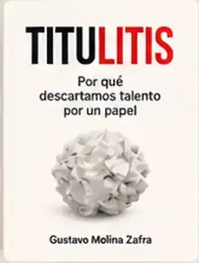

TITULITIS
Por qué descartamos talento por un papel.
aVer en Amazon →
Ideas, experiencias y herramientas reales para el trabajo, la empresa, la tecnología y la vida.
Cinco libros. Una misma forma de ver el mundo: con criterio y sin rodeos.

Por qué descartamos talento por un papel.
aVer en Amazon →Por qué la tecnología no entiende lo que de verdad importa.
aVer en Amazon →Lo que no se ve también importa.
aVer en Amazon →Una guía práctica para entender tu salud y tomar el control.
aVer en Amazon →Cómo aprovechar la inteligencia artificial en tu día a día.
aVer en Amazon →BookMark recuerda por qué página vas en cada libro, mantiene tu biblioteca sincronizada y te muestra progreso, racha y ritmo de lectura.
Gustavo Molina Zafra escribe desde la experiencia empresarial, técnica y digital. Sus libros nacen de problemas reales, aprendizaje práctico y la intención de dejar ideas útiles, claras y aplicables.